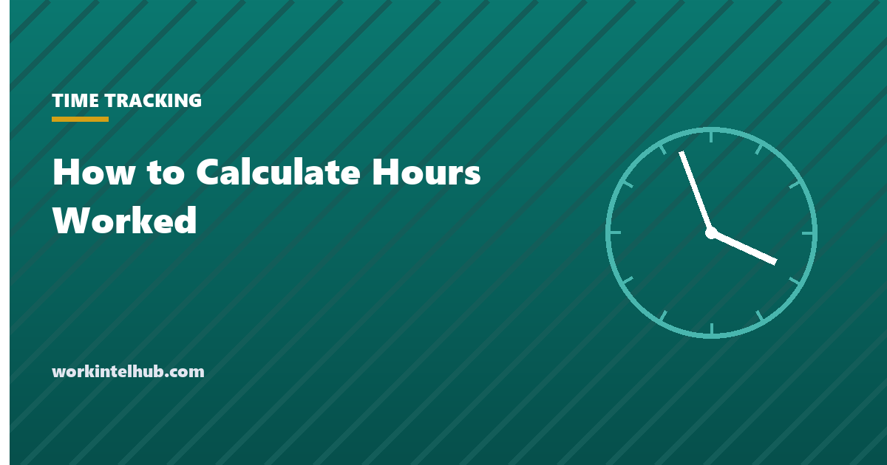

How to Calculate Hours Worked

To calculate hours worked, convert the start and end times to minutes, subtract one from the other, take off any unpaid meal break, and divide by 60. The answer is a decimal number of hours, which is what payroll multiplies by the rate.
The arithmetic is the easy part. What makes the number right or wrong is what you count as work in the first place, which federal regulations define more precisely than most timesheets do. Both are covered below, with a calculator for a single shift and a link to the weekly version.
Single-shift calculator
The method, step by step
- Write both times in 24-hour form. 8:47 am is 08:47; 5:22 pm is 17:22. This removes the am/pm errors that account for most hand-calculation mistakes.
- Convert each to minutes past midnight. Hours times 60 plus minutes. 08:47 is 527; 17:22 is 1,042.
- Subtract. 1,042 minus 527 is 515 minutes. If the end time is smaller than the start time, the shift crossed midnight: add 1,440 to the end time first.
- Remove unpaid breaks. A 30-minute unpaid meal gives 485 minutes. Only bona fide meal periods can be removed; see the rules below.
- Divide by 60. 485 ÷ 60 = 8.08 hours. Payroll uses the decimal; 8 hours 5 minutes is the same number in clock form.
- Add the days for the week and apply overtime to anything over 40 (or your state's daily threshold).
The mistake to watch for is treating minutes as decimals directly. 8 hours 30 minutes is 8.50, not 8.30; 8 hours 15 minutes is 8.25. Our timesheet conversion chart gives every minute from 1 to 59 as a decimal for anyone totalling by hand.
What counts as hours worked
Federal regulations at 29 CFR Part 785 define hours worked, and the definitions decide whether the number is right regardless of how carefully it was calculated.
| Time | Counts? | Rule |
|---|---|---|
| Rest breaks of 5 to 20 minutes | Yes | 29 CFR 785.18: "must be counted as hours worked" |
| Meal period, 30 minutes or more, fully relieved | No | 29 CFR 785.19: bona fide meal period |
| Meal eaten at the desk while working | Yes | Same section: "working while eating" |
| Work done before clocking in or after clocking out | Yes | Work the employer knows about or should know about is compensable |
| Ordinary commute | No | Home-to-work travel is not work time |
| Travel between job sites during the day | Yes | Part of the day's principal activity |
| Required training or meetings | Yes | Voluntary, outside hours, unrelated and no work performed is the only exclusion |
| On call, required to stay on premises | Yes | Engaged to wait is work; the same test decides whether the gap in a split shift is paid |
| On call, free to use time for own purposes | Generally no | Waiting to be engaged |
The rows that cause claims are the third, fourth and last two. An employee who logs in ten minutes early every day to load systems is working for those ten minutes, and the employer who knows it and does not pay for it owes the time. The safest instruction is that nobody does anything work-related before the punch in, and that the punch reflects when they actually started.
Rounding and the 7-minute rule
Time may be rounded to the nearest 5 minutes, tenth of an hour or quarter hour under 29 CFR 785.48, provided the rounding "will not result, over a period of time, in failure to compensate the employees properly for all the time they have actually worked". Quarter-hour rounding produces the 7-minute rule: 08:07 rounds to 08:00 and 08:08 rounds to 08:15. Rounding that always goes the employer's way fails the test, and with exact electronic records the justification for rounding at all is weak. The calculator shows exact, tenth and quarter values so the effect is visible.
Three worked examples
| Shift | Arithmetic | Hours worked |
|---|---|---|
| 07:00 to 15:30, 30-minute unpaid lunch taken away from the desk | 930 − 420 = 510 minutes; less 30 = 480 | 8.00 |
| 09:10 to 18:05, ate at the desk while covering the phones | 1,085 − 550 = 535 minutes; no deduction, the meal was work | 8.92 |
| 22:00 to 06:15 next day, two 15-minute rest breaks | (375 + 1,440) − 1,320 = 495 minutes; rest breaks are paid, no deduction | 8.25 |
The second and third rows are where hand-calculated timesheets most often go wrong: an automatic 30-minute deduction on the second row would underpay by half an hour, and deducting the rest breaks on the third row would underpay by another half hour. Over a year, for a full-time employee, that is roughly 250 hours.
From a day to a week to a pay cheque
Once each day is a decimal, the week is a sum and overtime is what exceeds 40. The time card calculator does the whole week with rounding and overtime options, the hours calculator adds up several shifts without the payroll rules, and the overtime calculator turns overtime hours into pay using the regular rate, which includes bonuses and differentials and is often higher than the hourly rate. For the recordkeeping side, the timesheet template is built around the fields 29 CFR 516.2 requires employers to keep.
Key takeaways
- Convert to 24-hour time, convert to minutes, subtract, remove unpaid meal breaks, divide by 60.
- Minutes are not decimals: 8 hours 30 minutes is 8.50, and 8 hours 15 minutes is 8.25.
- If the end time is before the start time, the shift crossed midnight; add 24 hours to the end.
- Rest breaks of 5 to 20 minutes are paid. Meal periods can be unpaid only when 30 minutes or more and fully relieved of duty.
- Work before the punch in or after the punch out that the employer knows about is compensable.
- Rounding to 5, 6 or 15 minutes is allowed only if it averages out. Rounding that favours the employer is not.
Frequently asked questions
How do you calculate hours worked with a lunch break?
Subtract the start time from the end time to get the elapsed time, then subtract the unpaid meal break, then divide the remaining minutes by 60. An 8:47 to 17:22 shift with a 30-minute unpaid lunch is 515 minutes less 30, which is 485 minutes or 8.08 hours.
How do I convert minutes to decimal hours?
Divide the minutes by 60. Fifteen minutes is 0.25, thirty is 0.50, forty-five is 0.75, and ten minutes is 0.17. Do not write 30 minutes as 0.30; that is the most common payroll error.
Do breaks count as hours worked?
Short rest breaks of about 5 to 20 minutes count and must be paid. A meal period of roughly 30 minutes or more does not count if the employee is completely relieved of duty. An employee required to stay at their desk or machine during a meal is working.
What is the 7-minute rule?
A consequence of quarter-hour rounding under 29 CFR 785.48: a punch up to seven minutes after the quarter rounds down, eight or more rounds up. It is permitted only if the rounding does not, over time, underpay employees.
Does time spent before clocking in count?
If work was performed and the employer knew or should have known, yes. Loading systems, preparing equipment or reading work email before the punch is work time. The fix is to have people clock in when they start, not to ignore the minutes.
How do I calculate hours worked for overtime?
Add the decimal hours for each day of the workweek. Hours over 40 are overtime under federal law. Some states also count daily hours over a threshold. The weekly time card calculator applies both rules.